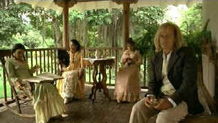

| Cobra Verde
(SE)/B+,B+ |
| Anchor
Bay/1987/110/ANA 1.77 |
Werner Herzog’s last collaboration with the mad dog of movies Klaus Kinski turns about to be a
surprisingly vital but rather overlooked film. Cobra Verde seems like another take on Aguirre Wrath of
God, with Klaus Kinski again cast in
conquering mold and touched by the devil. This time Kinski is the notorious Brazilian bandit named
for his venomous style.
We first meet Francisco Manoel da Silva digging in panned out gold mines. Mud covered and bent over,
he quickly rises to the stuff of legends as he struts barefoot with rifle loaded into a rural
town. It looks like a scene out of Kurosawa’s Yojimbo or a cliché spaghetti western with
everyone running for cover as Kinski’s evil character makes his entrance. How Kinski moves from
barefoot bandit to plantation overseer to an African Viceroy in short cinematic strokes may stretch
the imagination, but Herzog films with a beautiful eye. Compositions are mesmerizing. And Kinski is
fascinating to watch. The real life explosiveness of the actor is captured on screen in raw
emotion. You are never sure what the actor will do next. The Brazilian scenes feature some grand
jungle landscapes and the African scenes have the best assortment of natives since King Solomon’s
Mines blazed on the screen.
 |
| A moment of seeming domestic tranquilly. ©Anchor
Bay |
Anchor Bay has done a handsome job with all the Herzog films. Cobra
Verde's color is enticing with excellent saturation. The lushness of the jungles grows right
off the screen. Overall brightness is delivered with room to spare and shadows come to live within
the fine contrast range. Yes, the transfer is sharp enough to reveal the madness behind Kinski's
eyes. There's no blooming in the picture. Grain is displayed in tight patters. The Dolby Digital
5:1 surround captures the feeling of the jungle and ferocity of the fights. In German with optional
yellow English subtitles.
Werner Herzog provides another erudite audio commentary. Herzog expounds
on Kinski, of course, and the challenge of filming in difficult places. The man loves a challenge
and loves making films.
|
|
|
|

Selections from the Feature Archive include articles on
Akira Kurosawa, Frank
Darabont, Blonde Bimbos, Hollywood Street Gangs, or Vietnam: The
Hollywood Pariah, and many more....

Click on the image above for as original view of Akira Kurosawa's work

The major studio vaults are filled with incredible film treasures which
few have seen the light of DVD.
Open the Vaults

The Movie Poster
Archive includes extensive poster images from the films of stars like Susan Hayward, Kirk Douglas,
Katharine Hepburn and many more. Our
featured star is Edward G. Robinson

Odd Man Out/B+,B

This straight-forward IRA tale takes on dream-like qualities under the polished direction of Carol
Reed. Stunning images and an amazing James Mason performance.
|